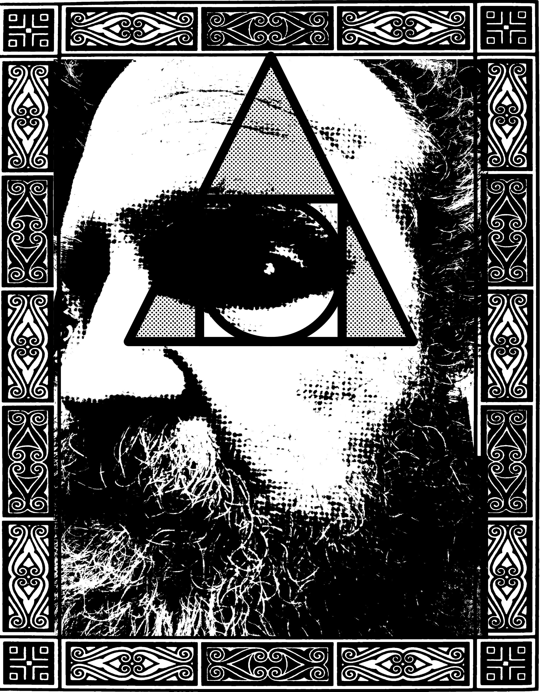

Ostensible Cat Design
Bleak Forest Tabletop RPG System
Created by Johnathan L Bingham

Introduction: About Me & the Game
Kia ora koutou, hello all and welcome to my site. I'm John Bingham, a Whanganui-a-Tara/Wellington, Aotearoa New Zealand based artist and game designer. Some of you may be familiar with my work on OSR projects such as Astonishing Swordsmen and Sorcerers of Hyperborea (or now simply Hyperborea), Expeditious Retreat Press Advanced Adventures line, OSRIC 2e, Labyrinth Lord 2e, etc. I've been around for a little while, doing art and some design for RPGs for 20+ years.
For the past 5+ years, I've been hard at work developing the Bleak Forest Game Engine (or rather what has now become the Bleak Forest Game Engine). This has most definitely been a labour of love, consuming quite a bit of my time, but fueled by deep love and passion for the hobby. I will say up front that I don't really have any delusions of grandeur or self-importance here. I am, in the end, just another hobbyist nerd with a strong need to make stuff.
I guess if I am asked "why create another rpg system when there are already more out there easily available than any one person could play or even just glance through?" my answer is simply - because I could. Now, I do not mean to be flippant - well not really. I have been working as an artist for several OSR projects since back in 2003. Along the way, I have tried my hand at writing and designing adventures and zines for a few OSR and small press publishers, but there is always that small feeling of being a visitor or renter in someone else's world. Now do not get me wrong, that is extremely fun and rewarding in its own right, but you never have a full sense of ownership in what you are doing. I just wanted to do it to see if I could, and to try out some ideas that I had rattling around for far longer than I can remember.
You may notice that Bleak Forest is not an OSR game. By that, it is not a derivative of the world's most popular RPG. I feel there are many cool clones and offshoots that I didn't need to try my hand at that. Instead, I had a few things that I wanted to wrap a game system around with a few guiding principles. Here's my thoughts:
- Classless System: you define your character through skill and trait choices made as you go along, rather than being defined by a rigid class structure.
- Meaningful Stats: your stats are integral to skill choices and gameplay (no dump stats). All stats meaningfully impact your choices in skills and progression.
- Meaningful Skills: having the foraging skill is just as meaningful to gameplay as a magic or combat skills. Choices matter and having a well rounded set of skills can be the difference between success or sorrow.
- Human POV Default: the world of the Bleak Forest is grim and perilous. while there are other humanoid creatures, their motives and agenda are not necessarilyhostile, but they are often alien to humans (after all, if a creature is intrinsically magical and/or effectively immortal, then their worldview is probablyquite a bit different.
- Fragility of Life: the world is Bleak and brutal by design. Not every encounter can or should devolve into combat.